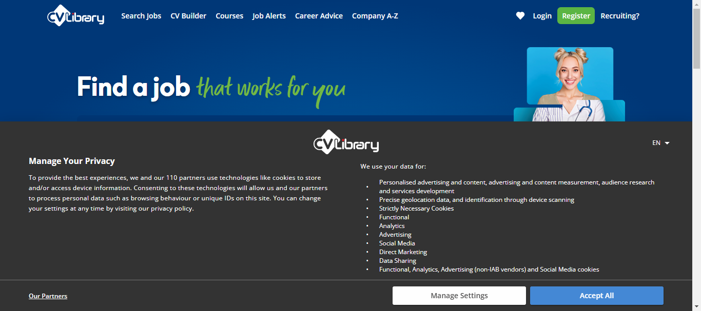
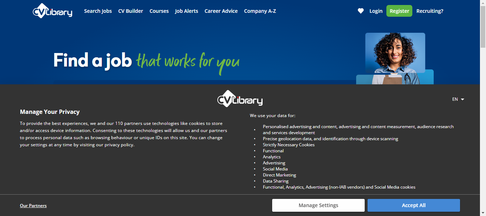
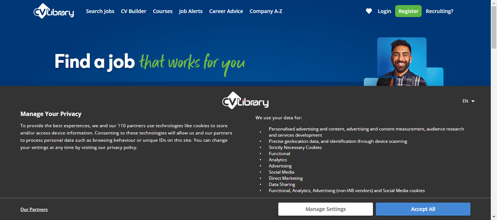
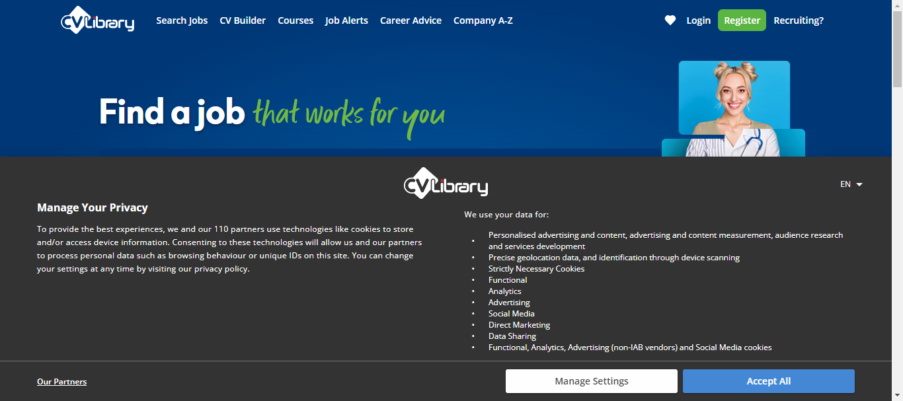
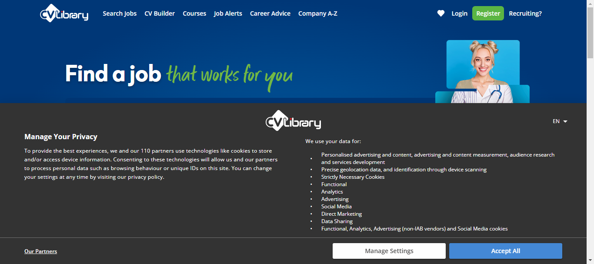
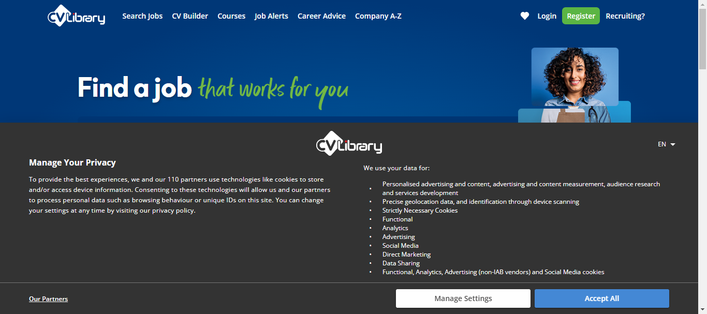
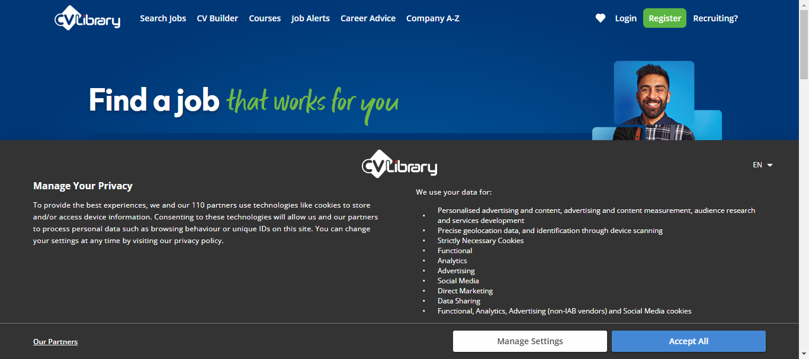
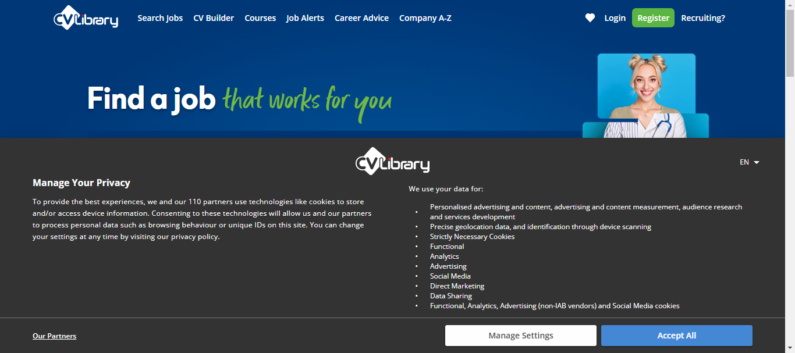

Started
Dec 22, 2023 01:16:50 am
Ended
Dec 22, 2023 01:19:05 am
Features Passed
0
Features Failed
1
Features
Scenarios
Steps
Timeline
Tags
| Name | Passed | Failed | Skipped | Others | Passed % |
|---|---|---|---|---|---|
| @regression | 0 | 7 | 0 | 0 | 0% |
| @author_Amruta | 0 | 7 | 0 | 0 | 0% |
System/Environment
| Name | Value |
|---|---|
| Engineer | Amruta |
| Project | car-guru-cucumber |
| os | Windows |
-
Job search results functionality
01:16:53 / 00:02:11:997 Fail
Job search results functionality
12.22.2023 01:16:53 12.22.2023 01:19:05 00:02:11:997 · #test-id=1As a user, I should be able to select options and search jobsFailVerifyJobSearchResultUsingDifferentDataSetFailVerifyJobSearchResultUsingDifferentDataSetGiven I am on Home PageWhen I enter job title "Tester"And I enter location "Surrey"And I select distance "10 miles"Then I click on moreSearchOptions LinkAnd I enter salaryMin "30000"Step skippedAnd I enter salaryMax "500000"Step skippedAnd I select salaryType "Per annum"Step skippedAnd I select jobType "Permanent"Step skippedThen I click on Find Jobs buttonStep skippedAnd I verify the result "Permanent Tester jobs in Surrey"Step skippeduk.co.library.steps.Hooks.tearDown(io.cucumber.java.Scenario)VerifyJobSearchResultUsingDifferentDataSet FailVerifyJobSearchResultUsingDifferentDataSetGiven I am on Home PageWhen I enter job title "Developer"And I enter location "Basildon"And I select distance "25 miles"Then I click on moreSearchOptions LinkAnd I enter salaryMin "40000"Step skippedAnd I enter salaryMax "60000"Step skippedAnd I select salaryType "Per annum"Step skippedAnd I select jobType "Contract"Step skippedThen I click on Find Jobs buttonStep skippedAnd I verify the result "Contract Developer jobs in Basildon"Step skippeduk.co.library.steps.Hooks.tearDown(io.cucumber.java.Scenario)VerifyJobSearchResultUsingDifferentDataSet
FailVerifyJobSearchResultUsingDifferentDataSetGiven I am on Home PageWhen I enter job title "Developer"And I enter location "Basildon"And I select distance "25 miles"Then I click on moreSearchOptions LinkAnd I enter salaryMin "40000"Step skippedAnd I enter salaryMax "60000"Step skippedAnd I select salaryType "Per annum"Step skippedAnd I select jobType "Contract"Step skippedThen I click on Find Jobs buttonStep skippedAnd I verify the result "Contract Developer jobs in Basildon"Step skippeduk.co.library.steps.Hooks.tearDown(io.cucumber.java.Scenario)VerifyJobSearchResultUsingDifferentDataSet FailVerifyJobSearchResultUsingDifferentDataSetGiven I am on Home PageWhen I enter job title "Quality Engineer"And I enter location "Edinburgh, City of Edinburgh"And I select distance "10 miles"Then I click on moreSearchOptions LinkAnd I enter salaryMin "40000"Step skippedAnd I enter salaryMax "70000"Step skippedAnd I select salaryType "Per annum"Step skippedAnd I select jobType "Temporaray"Step skippedThen I click on Find Jobs buttonStep skippedAnd I verify the result "Temporary Quality Engineer jobs in Edinburgh"Step skippeduk.co.library.steps.Hooks.tearDown(io.cucumber.java.Scenario)VerifyJobSearchResultUsingDifferentDataSet
FailVerifyJobSearchResultUsingDifferentDataSetGiven I am on Home PageWhen I enter job title "Quality Engineer"And I enter location "Edinburgh, City of Edinburgh"And I select distance "10 miles"Then I click on moreSearchOptions LinkAnd I enter salaryMin "40000"Step skippedAnd I enter salaryMax "70000"Step skippedAnd I select salaryType "Per annum"Step skippedAnd I select jobType "Temporaray"Step skippedThen I click on Find Jobs buttonStep skippedAnd I verify the result "Temporary Quality Engineer jobs in Edinburgh"Step skippeduk.co.library.steps.Hooks.tearDown(io.cucumber.java.Scenario)VerifyJobSearchResultUsingDifferentDataSet FailVerifyJobSearchResultUsingDifferentDataSetGiven I am on Home PageWhen I enter job title "Quality Assurance"And I enter location "London"And I select distance "35 miles"Then I click on moreSearchOptions LinkAnd I enter salaryMin "45000"Step skippedAnd I enter salaryMax "75000"Step skippedAnd I select salaryType "Per annum"Step skippedAnd I select jobType "Apprenticeship"Step skippedThen I click on Find Jobs buttonStep skippedAnd I verify the result "Apprenticeship Quality Assurance jobs in London"Step skippeduk.co.library.steps.Hooks.tearDown(io.cucumber.java.Scenario)VerifyJobSearchResultUsingDifferentDataSetFailVerifyJobSearchResultUsingDifferentDataSetGiven I am on Home PageWhen I enter job title "Test Engineer"And I enter location "Derby"And I select distance "10 miles"Then I click on moreSearchOptions LinkAnd I enter salaryMin "25000"Step skippedAnd I enter salaryMax "45000"Step skippedAnd I select salaryType "Per annum"Step skippedAnd I select jobType "Part Time"Step skippedThen I click on Find Jobs buttonStep skippedAnd I verify the result "Part Time Test Engineer jobs in Derby"Step skippeduk.co.library.steps.Hooks.tearDown(io.cucumber.java.Scenario)VerifyJobSearchResultUsingDifferentDataSetFailVerifyJobSearchResultUsingDifferentDataSetGiven I am on Home PageWhen I enter job title "Test Analyst"And I enter location "Edenbridge, Kent"And I select distance "25 miles"Then I click on moreSearchOptions LinkAnd I enter salaryMin "25000"Step skippedAnd I enter salaryMax "45000"Step skippedAnd I select salaryType "Per annum"Step skippedAnd I select jobType "Permanent"Step skippedThen I click on Find Jobs buttonStep skippedAnd I verify the result "Permanent Test Analyst jobs in Edenbridge"Step skippeduk.co.library.steps.Hooks.tearDown(io.cucumber.java.Scenario)VerifyJobSearchResultUsingDifferentDataSetFailVerifyJobSearchResultUsingDifferentDataSetGiven I am on Home PageWhen I enter job title "Test Manager"And I enter location "Hampshire"And I select distance "35 miles"Then I click on moreSearchOptions LinkAnd I enter salaryMin "35000"And I enter salaryMax "65000"And I select salaryType "Per annum"And I select jobType "Permanent"Then I click on Find Jobs buttonAnd I verify the result "Permanent Test Manager jobs in Hampshire"Step skippeduk.co.library.steps.Hooks.tearDown(io.cucumber.java.Scenario)VerifyJobSearchResultUsingDifferentDataSet
FailVerifyJobSearchResultUsingDifferentDataSetGiven I am on Home PageWhen I enter job title "Quality Assurance"And I enter location "London"And I select distance "35 miles"Then I click on moreSearchOptions LinkAnd I enter salaryMin "45000"Step skippedAnd I enter salaryMax "75000"Step skippedAnd I select salaryType "Per annum"Step skippedAnd I select jobType "Apprenticeship"Step skippedThen I click on Find Jobs buttonStep skippedAnd I verify the result "Apprenticeship Quality Assurance jobs in London"Step skippeduk.co.library.steps.Hooks.tearDown(io.cucumber.java.Scenario)VerifyJobSearchResultUsingDifferentDataSetFailVerifyJobSearchResultUsingDifferentDataSetGiven I am on Home PageWhen I enter job title "Test Engineer"And I enter location "Derby"And I select distance "10 miles"Then I click on moreSearchOptions LinkAnd I enter salaryMin "25000"Step skippedAnd I enter salaryMax "45000"Step skippedAnd I select salaryType "Per annum"Step skippedAnd I select jobType "Part Time"Step skippedThen I click on Find Jobs buttonStep skippedAnd I verify the result "Part Time Test Engineer jobs in Derby"Step skippeduk.co.library.steps.Hooks.tearDown(io.cucumber.java.Scenario)VerifyJobSearchResultUsingDifferentDataSetFailVerifyJobSearchResultUsingDifferentDataSetGiven I am on Home PageWhen I enter job title "Test Analyst"And I enter location "Edenbridge, Kent"And I select distance "25 miles"Then I click on moreSearchOptions LinkAnd I enter salaryMin "25000"Step skippedAnd I enter salaryMax "45000"Step skippedAnd I select salaryType "Per annum"Step skippedAnd I select jobType "Permanent"Step skippedThen I click on Find Jobs buttonStep skippedAnd I verify the result "Permanent Test Analyst jobs in Edenbridge"Step skippeduk.co.library.steps.Hooks.tearDown(io.cucumber.java.Scenario)VerifyJobSearchResultUsingDifferentDataSetFailVerifyJobSearchResultUsingDifferentDataSetGiven I am on Home PageWhen I enter job title "Test Manager"And I enter location "Hampshire"And I select distance "35 miles"Then I click on moreSearchOptions LinkAnd I enter salaryMin "35000"And I enter salaryMax "65000"And I select salaryType "Per annum"And I select jobType "Permanent"Then I click on Find Jobs buttonAnd I verify the result "Permanent Test Manager jobs in Hampshire"Step skippeduk.co.library.steps.Hooks.tearDown(io.cucumber.java.Scenario)VerifyJobSearchResultUsingDifferentDataSet
-
@regression
7 tests
@regression
7 failedStatus Timestamp TestName Fail 01:16:53 am VerifyJobSearchResultUsingDifferentDataSet Job search results functionality.VerifyJobSearchResultUsingDifferentDataSetFail 01:17:08 am VerifyJobSearchResultUsingDifferentDataSet Job search results functionality.VerifyJobSearchResultUsingDifferentDataSetFail 01:17:26 am VerifyJobSearchResultUsingDifferentDataSet Job search results functionality.VerifyJobSearchResultUsingDifferentDataSetFail 01:17:45 am VerifyJobSearchResultUsingDifferentDataSet Job search results functionality.VerifyJobSearchResultUsingDifferentDataSetFail 01:18:06 am VerifyJobSearchResultUsingDifferentDataSet Job search results functionality.VerifyJobSearchResultUsingDifferentDataSetFail 01:18:26 am VerifyJobSearchResultUsingDifferentDataSet Job search results functionality.VerifyJobSearchResultUsingDifferentDataSetFail 01:18:45 am VerifyJobSearchResultUsingDifferentDataSet Job search results functionality.VerifyJobSearchResultUsingDifferentDataSet -
@author_Amruta
7 tests
@author_Amruta
7 failedStatus Timestamp TestName Fail 01:16:53 am VerifyJobSearchResultUsingDifferentDataSet Job search results functionality.VerifyJobSearchResultUsingDifferentDataSetFail 01:17:08 am VerifyJobSearchResultUsingDifferentDataSet Job search results functionality.VerifyJobSearchResultUsingDifferentDataSetFail 01:17:26 am VerifyJobSearchResultUsingDifferentDataSet Job search results functionality.VerifyJobSearchResultUsingDifferentDataSetFail 01:17:45 am VerifyJobSearchResultUsingDifferentDataSet Job search results functionality.VerifyJobSearchResultUsingDifferentDataSetFail 01:18:06 am VerifyJobSearchResultUsingDifferentDataSet Job search results functionality.VerifyJobSearchResultUsingDifferentDataSetFail 01:18:26 am VerifyJobSearchResultUsingDifferentDataSet Job search results functionality.VerifyJobSearchResultUsingDifferentDataSetFail 01:18:45 am VerifyJobSearchResultUsingDifferentDataSet Job search results functionality.VerifyJobSearchResultUsingDifferentDataSet
-
org.openqa.selenium.ElementClickInterceptedException
7 tests
org.openqa.selenium.ElementClickInterceptedException
7 failedStatus Timestamp TestName Fail 01:17:05 am Then I click on moreSearchOptions Link Job search results functionality.VerifyJobSearchResultUsingDifferentDataSet.Then I click on moreSearchOptions LinkFail 01:17:23 am Then I click on moreSearchOptions Link Job search results functionality.VerifyJobSearchResultUsingDifferentDataSet.Then I click on moreSearchOptions LinkFail 01:17:42 am Then I click on moreSearchOptions Link Job search results functionality.VerifyJobSearchResultUsingDifferentDataSet.Then I click on moreSearchOptions LinkFail 01:18:03 am Then I click on moreSearchOptions Link Job search results functionality.VerifyJobSearchResultUsingDifferentDataSet.Then I click on moreSearchOptions LinkFail 01:18:22 am Then I click on moreSearchOptions Link Job search results functionality.VerifyJobSearchResultUsingDifferentDataSet.Then I click on moreSearchOptions LinkFail 01:18:42 am Then I click on moreSearchOptions Link Job search results functionality.VerifyJobSearchResultUsingDifferentDataSet.Then I click on moreSearchOptions LinkFail 01:19:03 am Then I click on Find Jobs button Job search results functionality.VerifyJobSearchResultUsingDifferentDataSet.Then I click on Find Jobs button